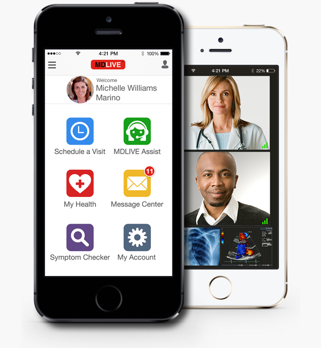

Welcome to MDLIVE
Do you get MDLIVE as a benefit through your employer or group?
Need assistance?
1-800-400-6354
With MDLIVE you can visit with a Doctor or Therapist in real time from the comfort of your home or office.
Our nationwide network of board-certified doctors and licensed therapists is available 24/7 by phone or secure video to assist with non-emergency medical conditions.
Avoid long waits at the doctor’s office. Eliminate unnecessary visits to the ER or urgent care centers.
Our doctors will see you now!
TopOur doctors can advise, recommend treatment and write prescriptions for non emergency medical conditions.
MDLIVE offers the largest telehealth network with an average of 15 years of practice experience and includes primary care, pediatrics, family and emergency medicine doctors and therapists who are licensed in the state where patients are located and have incorporated MDLIVE into their practice to provide, convenient access to quality care.
Yes. MDLIVE has local pediatricians on-call 24/7/365. However, a parent or guardian must be present during registration and any consultations involving minors.
With over 60,000 pharmacies available, your prescriptions are sent to your pharmacy of choice as soon as your consultation is over.
Important: Prescriptions are issued only when clinically appropriate. No controlled substances may be prescribed and the availability of some prescriptions may be restricted by law in some states.
Click here for our full prescription policy.